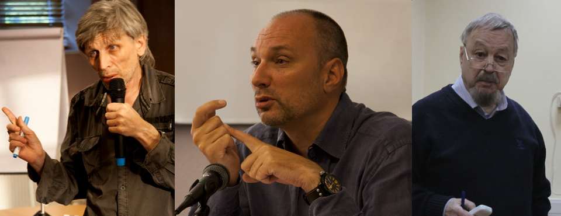
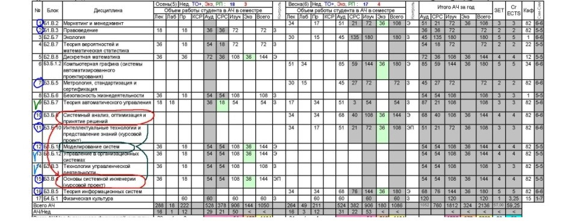
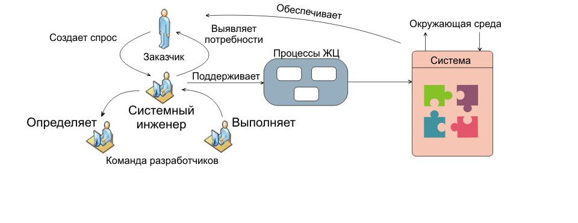

Значительную часть дисциплин по теории управления, системному подходу, управлению жизненным циклом сложных систем и др. читают преподаватели, являющиеся крупнейшими в России методологами, учеными и практиками в области системной инженерии и теории управления.

Кафедра стратегического планирования и методологии управления проводит подготовку бакалавров в рамках направления 220100 «Системный анализ и управление» по профилю «Стратегическое управление жизненным циклом сложных инженерных объектов». Программа подготовки предполагает приобретение студентами как технических, так и управленческих компетенций, интегрируемых на основе знаний, полученных при помощи таких дисциплин кафедры, как системный подход и системная инженерия.

Профессии системного инженера и технологического менеджера, которые приобретают выпускники кафедры, являются ключевыми на предприятиях всех отраслей, занятых созданием сложной технической продукции и стремящихся к максимальной эффективности своей деятельности в современных экономических условиях.
© Developed by Vlad Kolesov @creedence8